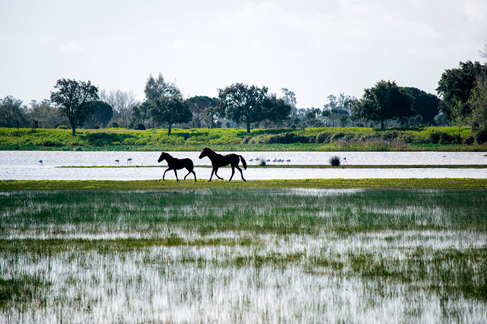
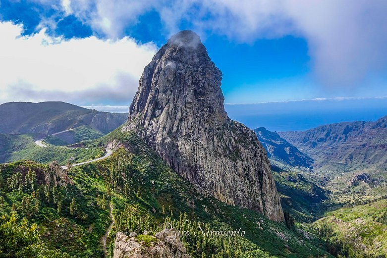
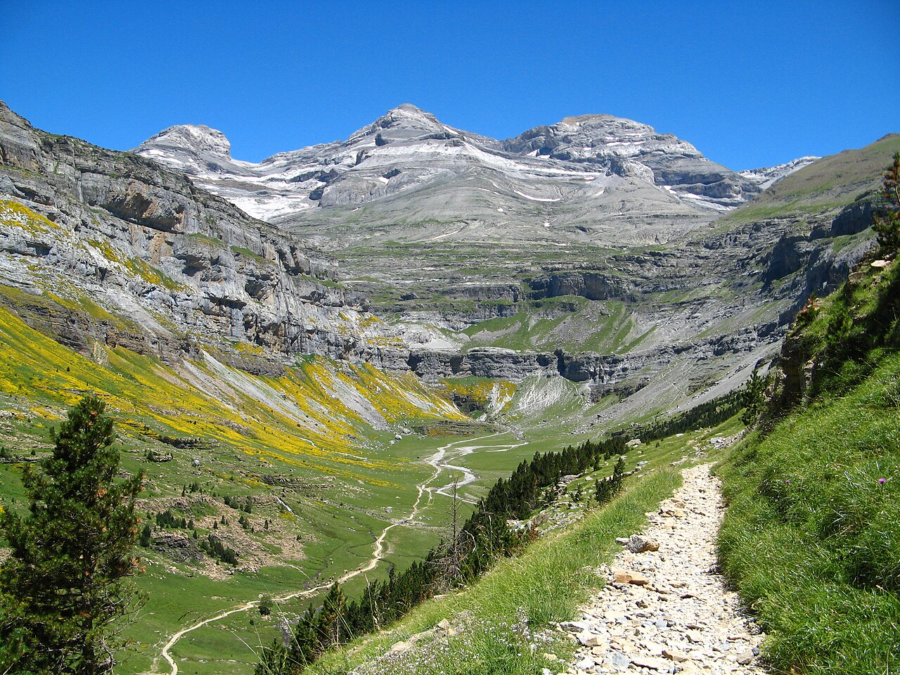

Béns naturals a Espanya
Inici
Béns culturals
Béns naturals
Recursos i enllaços
Parc Nacional de Doñana (Andalusia, 1994)

Parc Nacional de Doñana
Parc Nacional de Garajonay (Canàries, 1986)

Parc Nacional de Garajonay
Pirineus, Mont Perdut (Aragó/Navarra, 1997)

Pirineus --Mont Perdut